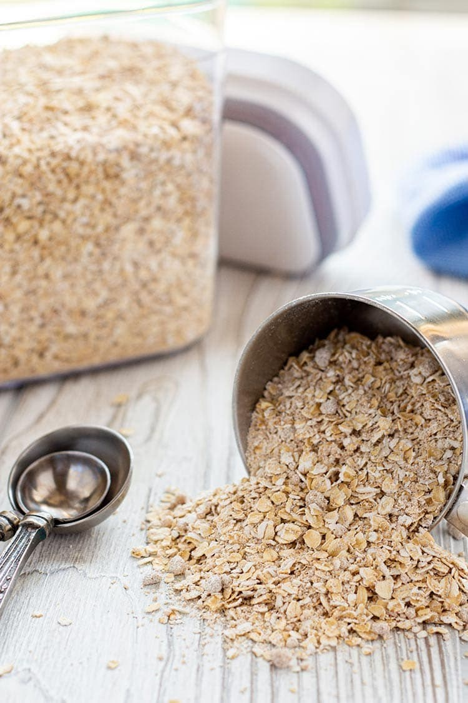

Oatmeal (Instant)

Description
Bland unless you make it not.
Ingredients
instant oats
hot water
Instructions
heat water over medium-high heat until boiling
prepare bowl with desired amount of oats
pour hot water over oats, stirring until desired consistency
back Home